The endoplasmic reticulum: making, folding and checking proteins
Protein handling and organelles
Cell Biology (3MB001)
About this lecture
About a third of all human proteins are made into the endoplasmic reticulum (ER): every secreted protein, every protein of the plasma membrane, and the proteins of the ER, Golgi and lysosomes. Today: how they get in, how they fold, and how the ER checks them.
After this lecture you can:
explain how SRP and the translocon bring a growing chain into the ER, co-translationally;
predict the topology of a membrane protein from its signal sequence, stop-transfer and signal-anchor segments;
describe folding in the ER: BiP, disulfide bonds (PDI), N-glycosylation and the calnexin cycle;
explain ER quality control, ERAD and the unfolded protein response;
describe the smooth ER: lipids, drug metabolism and the Ca²⁺ store.
The question: why is this cell full of membrane?
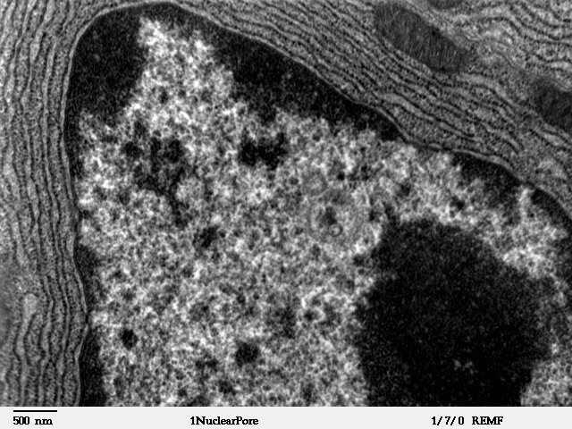
Pancreatic acinar cell (mammal), transmission electron micrograph; scale bar 500 nm. Centre: the nucleus, with gaps in its envelope (nuclear pores). Top right and left edge: stacked sheets of rough ER, lined with ribosomes.
This cell makes digestive enzymes and secretes them into the gut, all day.
Its cytoplasm is packed with flat membrane sheets covered in ribosomes: the rough ER.
Each enzyme is made by a ribosome in the cytosol, but must end up outside the cell, folded, with its disulfide bonds.
A receptor in the plasma membrane must also face the right way: its binding site outside, its signalling tail inside.
How does a protein get into the ER, fold correctly, and how does the cell catch the ones that fail?
The ER: one membrane, one lumen
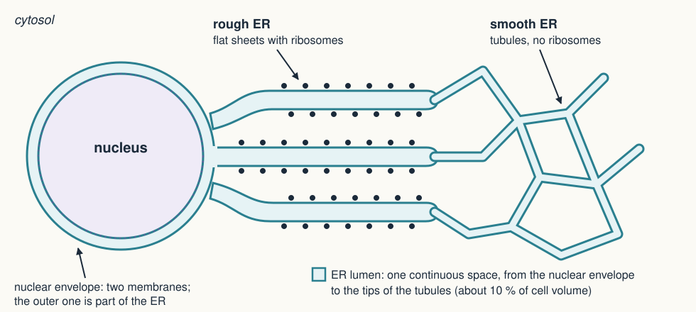
The ER is a single network of membrane: sheets (rough ER, with ribosomes) and tubules (smooth ER). The outer nuclear membrane is part of it.
Inside is one continuous space, the lumen. In topology it is like the outside of the cell (cell tour).
In a liver cell the ER is about half of all membrane in the cell.
The signal sequence: a ticket into the ER
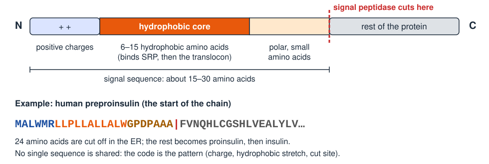
Most ER proteins start with an N-terminal signal sequence: a few positive charges, then a hydrophobic core, then a cut site.
The pattern is the signal, not an exact sequence. Put one in front of a cytosolic protein and it enters the ER.
Signal peptidase in the ER membrane cuts it off: the mature protein is shorter.
SRP brings the ribosome to the ER
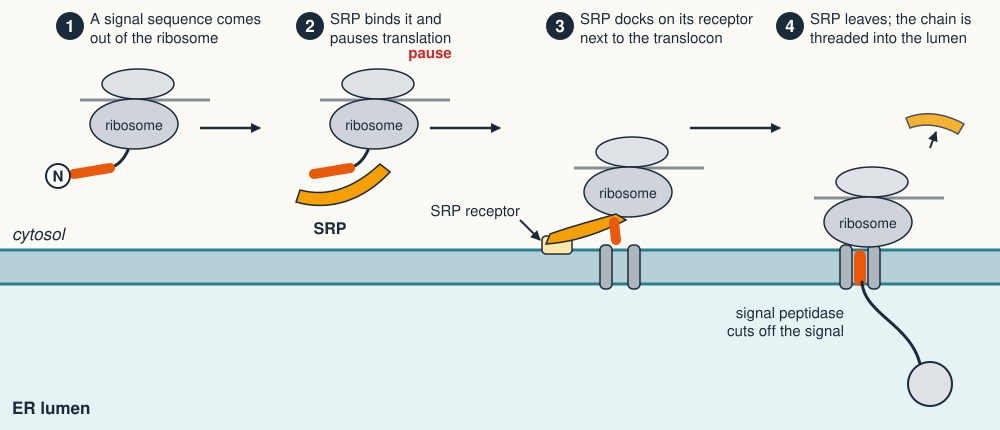
SRP (signal recognition particle: six proteins + an RNA) binds the signal as it leaves the ribosome and pauses translation.
SRP docks on the SRP receptor in the ER membrane; the ribosome is handed to the translocon.
GTP hydrolysis releases SRP for another round. The chain is threaded in while it is made: co-translational translocation.
The translocon: a channel with a plug and a side gate
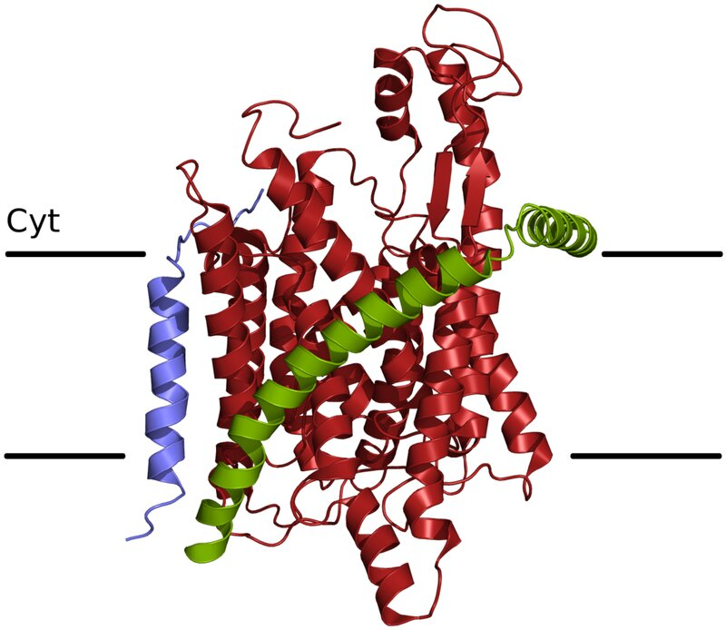
SecY translocon of the archaeon Methanococcus jannaschii (PDB 1RHZ), side view; cytosol on top. Human Sec61 has the same fold.
Sec61 complex: a pore in the membrane. A short plug helix keeps it closed when no chain is inside, so ions do not leak.
The chain goes through as an unfolded string: one chain at a time.
A lateral gate in the wall opens sideways into the lipid. A hydrophobic segment can slip out and stay in the membrane: this is how membrane proteins are made.
Some proteins enter after translation: tail-anchored proteins, whose only hydrophobic segment is at the C-terminus (another route, the GET pathway).
How do we know? Microsomes and protease
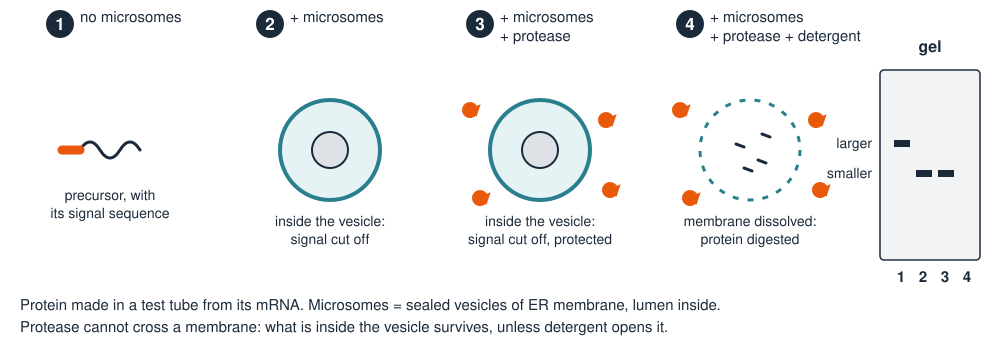
Milstein (1972): antibody light chain made in a test tube without ER is about 20 amino acids longer: the uncut signal.
Blobel: with microsomes (ER vesicles) the chain is cut and protected from protease, unless detergent opens the membrane. Nobel Prize 1999 for the signal hypothesis.
The same test shows topology: parts on the cytosolic side are digested, parts in the lumen are protected.
Membrane proteins: which way round?
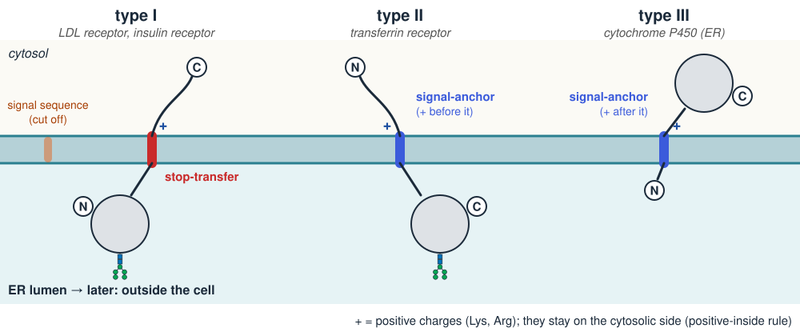
Type I: cleaved signal sequence, then a stop-transfer: N-terminus in the lumen, C-terminus in the cytosol.
Types II and III: no cleaved signal. The first hydrophobic segment is a signal-anchor. Positive charges stay on the cytosolic side and decide which end goes in.
Multipass proteins, and the side that faces out
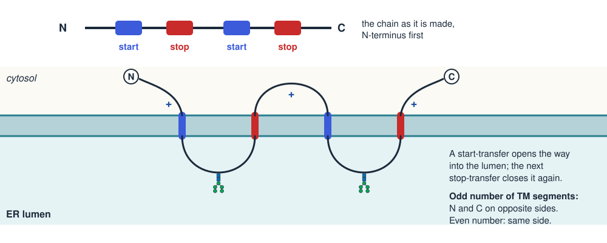
After the first segment, hydrophobic segments act as start-transfer and stop-transfer in turn. The same kind of helix plays either role: it depends on where the chain is when it arrives.
The orientation is fixed in the ER. Vesicles carry it to the cell surface without flipping it: the lumen side becomes the outside (cell tour). Sugars are added only in the lumen, so they always end up outside. Try it:Demo: topology builder
Folding in the ER: BiP and disulfide bonds
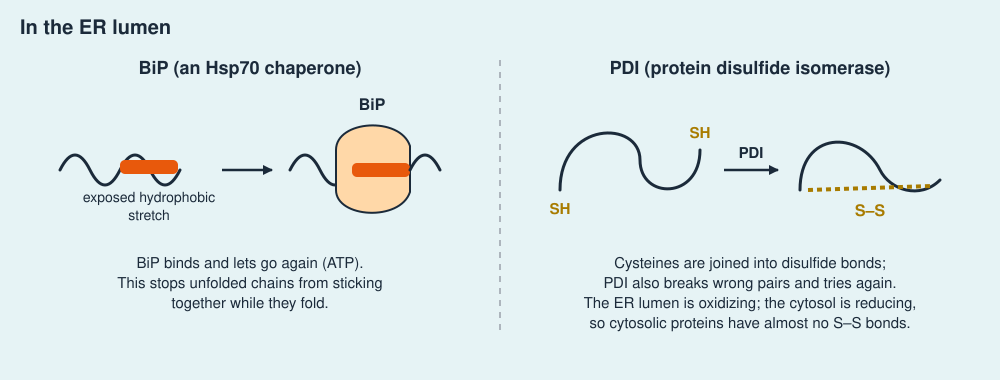
The lumen is crowded with chaperones. BiP (an Hsp70) binds exposed hydrophobic stretches and lets go again, using ATP.
Disulfide bonds (S–S) form only in the oxidizing ER lumen. PDI makes them and breaks wrong ones, until the right pairs are found.
N-glycosylation: a sugar block added in one step
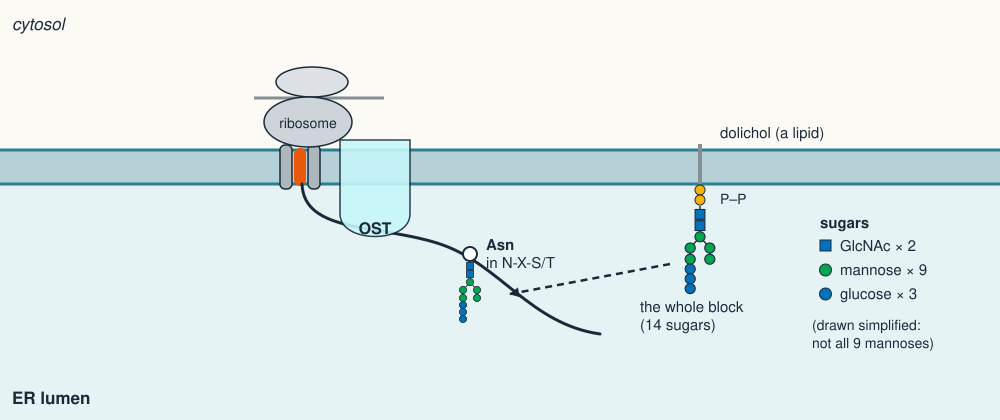
Oligosaccharyltransferase (OST), next to the translocon, moves a ready-made block of 14 sugars from the lipid dolichol to an asparagine in the sequence N-X-S/T (X is not proline).
It happens co-translationally, on most proteins that enter the ER. The sugars are later trimmed in the ER and rebuilt in the Golgi.
Tunicamycin, an antibiotic, blocks the first step: proteins misfold. A standard way to stress the ER in the lab.
The calnexin cycle: sugars as a folding tag
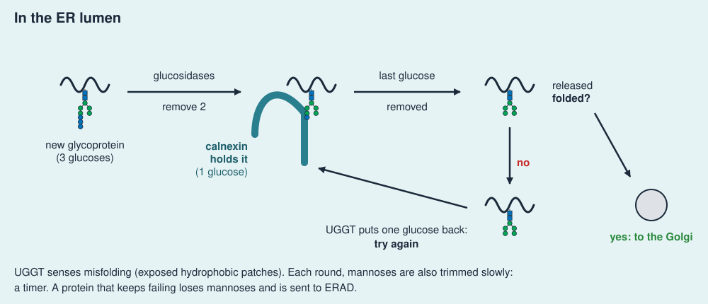
Glucosidases remove two glucoses. With one glucose left, the protein binds calnexin, a lectin chaperone in the ER membrane.
When the last glucose is removed, it is released. If it is still unfolded, UGGT puts a glucose back: another round.
Slow mannose trimming works as a timer: a protein that never folds is sent to degradation.
Quality control and ERAD
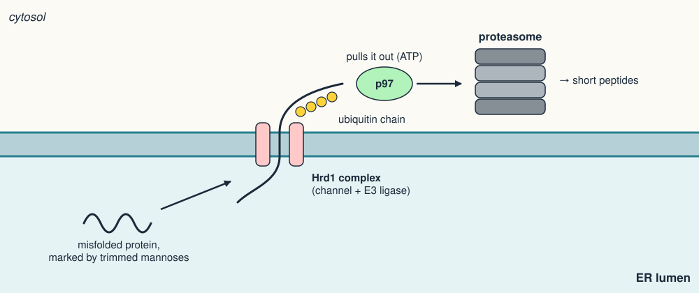
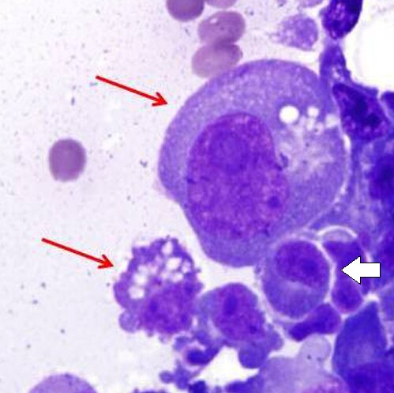
Myeloma cells in pleural fluid. Red arrows: plasma cells filled with Russell bodies, ER swollen with antibody that cannot leave. White arrow: a nearly normal plasma cell.
Only folded and assembled proteins leave the ER. Unfolded ones are held by chaperones.
ERAD (ER-associated degradation): the protein is pulled back into the cytosol through the Hrd1 complex, ubiquitinated, extracted by p97 (ATP) and destroyed by the proteasome.
When the ER is overloaded: the unfolded protein response
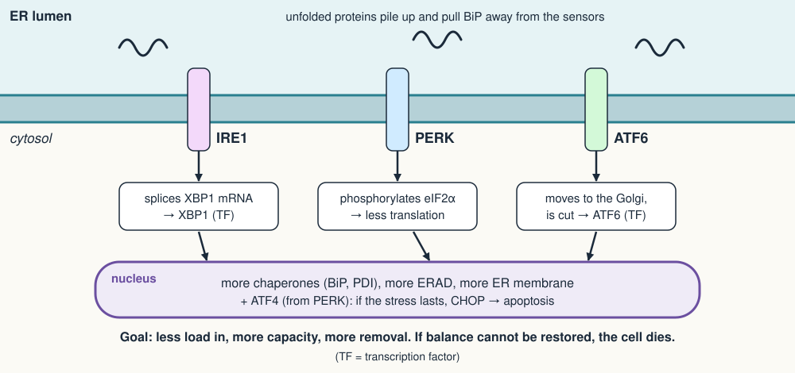
Three sensors, IRE1, PERK, ATF6, are held quiet by BiP. Unfolded proteins pull BiP away and the sensors switch on.
The cell makes more chaperones and ERAD machinery, translates less, and grows more ER. If the stress lasts, the UPR triggers apoptosis (CHOP).
Plasma cells and β cells live with high ER load; ER stress contributes to diabetes and to many neurodegenerative diseases.
The smooth ER: lipids, drugs and calcium
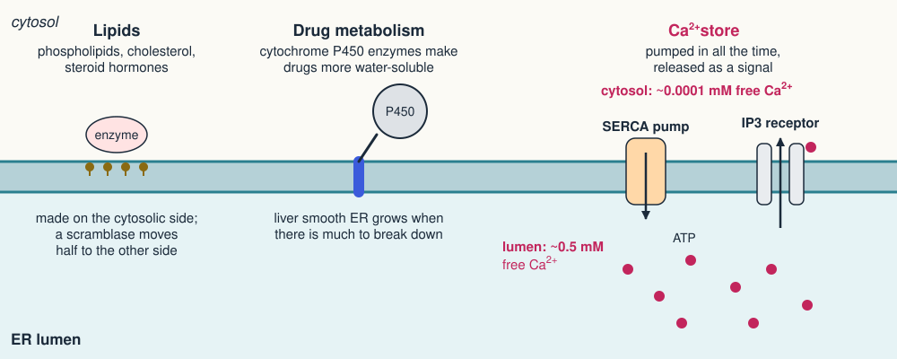
Lipids: most phospholipids and cholesterol are made here, on the cytosolic side; steroid hormones in adrenal and gonad cells. Statins block HMG-CoA reductase, an ER enzyme.
Drug metabolism:cytochrome P450 enzymes (type III, as shown earlier) in the liver smooth ER oxidise drugs so they can be excreted.
Ca²⁺ store:SERCA pumps keep ER Ca²⁺ high; IP₃ receptors release it as a signal. In muscle: the sarcoplasmic reticulum.
Why it matters: diseases of ER quality control
Cystic fibrosis, ΔF508: CFTR loses one phenylalanine in its first ATP-binding domain. It misfolds, is held by the calnexin cycle and destroyed by ERAD. Little reaches the surface, although it could still partly work. Correctors (elexacaftor, tezacaftor) help it fold and leave the ER (ion-channel lecture).
α1-antitrypsin deficiency (Z variant, Glu342Lys): the liver’s protease inhibitor folds slowly and forms polymers in the ER. Liver: the polymers damage hepatocytes (cirrhosis). Lungs: too little reaches the blood, so neutrophil elastase destroys lung tissue (emphysema; smoking makes it much worse). Discovered in Sweden (Laurell and Eriksson, Malmö, 1963).
Both are trafficking diseases: the protein is made but stuck in the ER. Disease mechanisms in depth: Sjukdomslära.
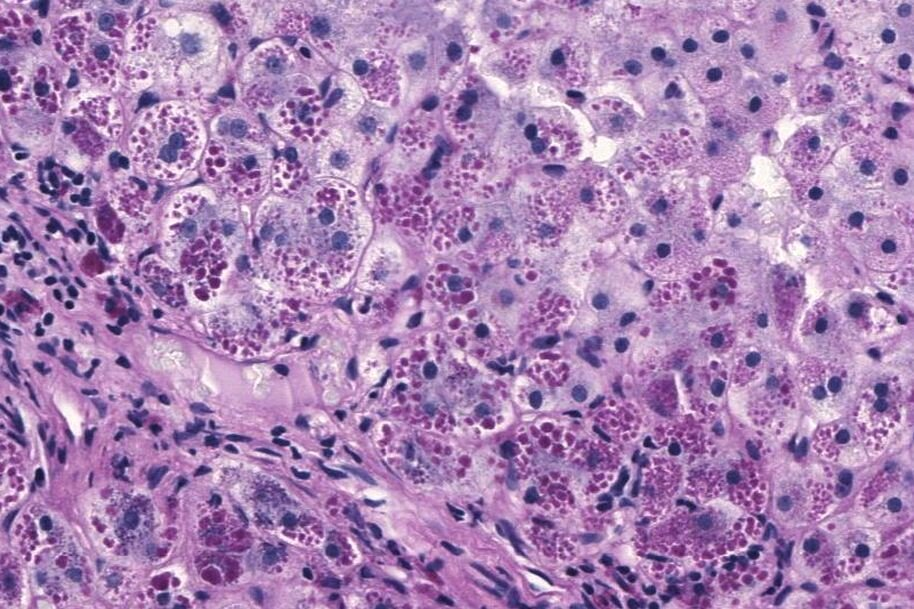
Liver biopsy, α1-antitrypsin deficiency, PAS stain after diastase. Pink globules: α1-antitrypsin trapped in the ER of hepatocytes.
Why it matters: antibody drugs and their sugars
Most therapeutic antibodies (e.g. trastuzumab, adalimumab) are made in CHO cells (Chinese hamster ovary) in large bioreactors. Their ER folds them, adds 16 disulfide bonds per IgG and assembles two heavy and two light chains.
Each heavy chain carries one N-glycan (Asn297), added in the ER and finished in the Golgi. It changes how the antibody works: without core fucose, it binds killer-cell receptors much better (stronger killing). Obinutuzumab is made fucose-poor on purpose.
The cell line matters: cetuximab, made in mouse cells, carries a non-human sugar (α-gal) that causes allergic reactions in some patients.
So the glycan pattern is a quality attribute that regulators require (Kliniska prövningar och läkemedelsutveckling).
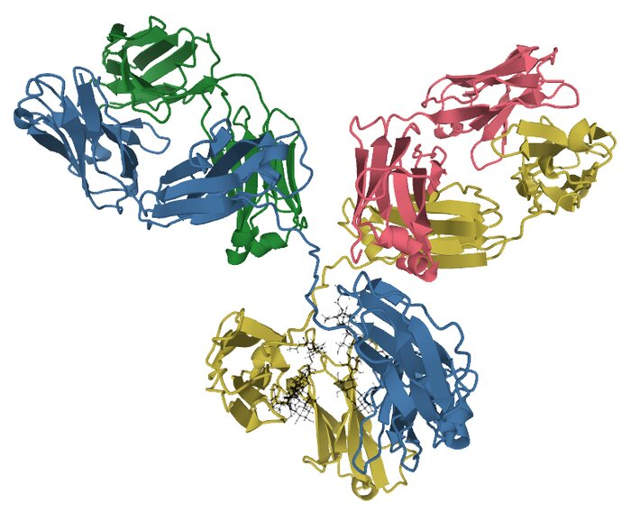
Structure of an IgG1 antibody: two heavy chains (blue, yellow) and two light chains (green, pink).
Summary
Proteins with an ER signal sequence are caught by SRP and threaded through the Sec61 translocon while they are made (co-translational translocation).
Topology is set in the ER: a stop-transfer stops translocation, a signal-anchor starts it, positive charges stay in the cytosol. The lumen side becomes the outside of the cell.
In the lumen, BiP prevents aggregation, PDI makes disulfide bonds, OST adds N-glycans; the calnexin cycle uses the glucose on the glycan as a folding tag.
Quality control keeps unfolded proteins in the ER; ERAD returns them to the cytosol for the proteasome; the UPR adjusts the ER to its load, or kills the cell.
The smooth ER makes lipids, metabolises drugs (P450) and stores Ca²⁺. Misfolding in the ER causes cystic fibrosis and α1-antitrypsin deficiency; the ER of CHO cells makes antibody drugs.
Read more (optional): Alberts et al., Molecular Biology of the Cell, 7th ed., ch. 12.